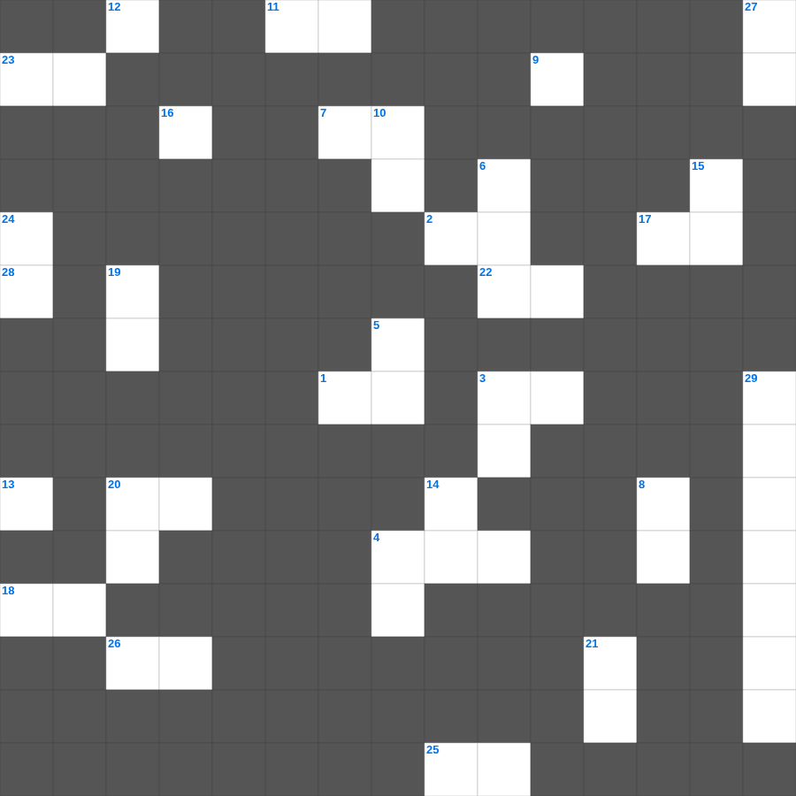

에베소서 마스터 50
📌 서비스 정의
십자가로세로는 교회 주보와 주일학교에서 사용할 수 있는 성경 기반 가로세로 퍼즐 서비스입니다. 성경 인물, 사건, 핵심 구절을 바탕으로 제작되었습니다. 온라인 풀이 및 인쇄 기능을 제공합니다.
📖 에베소서란?
에베소서는 그리스도 안에서 주어진 영적 축복과, 교회가 그리스도의 몸으로서 하나 됨을 강조하며 성도의 실천적 삶을 권면하는 바울의 서신입니다.
📚 에베소서의 주요 사건·주제
그리스도 안의 영적 축복 · 교회의 하나 됨(에베소서 2~4장) · 새 사람으로서의 삶에 대한 권면 · 가정과 부부에 대한 가르침 · 하나님의 전신 갑주(에베소서 6장)
에베소서를 주제로 한 에베소서 성경공부 자료입니다. 35개의 단어를 맞춰보세요! 가로세로 낱말 퍼즐 형식으로 에베소서의 핵심 내용을 재미있게 복습할 수 있습니다.

📝 가로 힌트
1. 누구든지 다른 교훈을 하며 바른 말 곧 우리 주 예수 그리스도의 말씀과 이것에 관한 교훈을 따르지 아니하면
2. 요한이서 1장 1절: 참으로 사랑하는 자들뿐 아니라 이것을 아는 모든 자도 사랑함
3. 나의 하나님이여 나를 살피사 내 이것을 아시며
3. 하나님이여 내 속에 정한 이것을 창조하시고
4. 그러나 너희는 택하신 족속요 왕 같은 이것들이요 거룩한 나라요 그의 소유가 된 백성이니
7. 하나님이 아브라함에게 약속하실 때에 가리켜 맹세할 자가 자기보다 더 큰 이가 없으므로 자기를 가리켜 이것하셨나
11. 후일에 어떤 사람들이 믿음에서 떠나 미혹하는 영과 이것의 가르침을 따르리라 하셨으니
12. 바울이 디도에게 지시한 장로 임명 방식: 각 이것에 장로들을 세우라
16. 맡은 자들에게 주장하는 자세를 하지 말고 양 무리의 이것이 되라
16. 그리스도도 너희를 위하여 고난을 받으사 너희에게 이것을 끼쳐 그 자취를 따라오게 하려 하셨느니라
17. 하나님을 모르는 자들과 우리 주 예수의 복음에 이것하지 않는 자들에게 형벌을 내리시리니
18. 빌레몬이 주 예수와 및 모든 성도에 대하여 가진 이것과 사랑을 들음이네
20. 그러므로 너희 마음의 허리를 동이고 근신하여 예수 그리스도께서 나타나실 때에 너희에게 가져다 주실 이것을 온전히 바랄지어다
22. 믿음으로 이것은 임종시에 요셉의 각 아들에게 축복하고 그 지팡이 머리에 의지하여 경배하였으며
23. 하만이 잔치 후 집에 돌아와 자랑한 것 '자기의 이것과 자녀의 수'
25. 현숙한 여인은 자기의 손을 펴서 가난한 자를 도우며 이것한 자를 위하여 손을 내밀며
26. 신화와 끝없는 이것에 몰두하지 말게 하려 함이라
28. 요한이서 1장 6절: 계명은 너희가 처음부터 들은 바와 같이 그 가운데서 이것하라 하심이라
📝 세로 힌트
3. 바벨론에 있는 교회가 너희에게 문안하고 내 아들 이 사람도 그러하느니라
4. 가까이 하여 말씀을 듣는 것이 우매한 자들이 이것 드리는 것보다 나으니
5. 우리를 양육하시되 이것하지 않은 것과 이 세상 정욕을 다 버리고
6. 이것은 우리와 성정이 같은 사람이로되 그가 비가 오지 않기를 간절히 기도한즉 삼 년 육 개월 동안 땅에 비가 오지 아니하고
8. 오직 위로부터 난 지혜는 첫째 성결하고 다음에 화평하고 관용하고 양순하며 이것과 선한 열매가 가득하고 편견과 거짓이 없나니
9. 화평하게 하는 자들은 화평으로 심어 이것의 열매를 거두느니라
10. 지혜의 두 종류: 위로부터 난 지혜와 이것 지혜
13. 누구에게든지 악으로 악을 갚지 말게 하고... 항상 이것을 따르라
14. 각각 이것을 받은 대로 하나님의 여러 가지 은혜를 맡은 선한 청지기 같이 서로 봉사하라
15. 종들은 자기 상전들에게 범사에 이것하여 기쁘게 하고 거슬러 말하지 말며
16. 범사에 네 자신이 선한 일의 이것이 되며 교훈에 부패하지 아니함과 정중함과
19. 야고보서의 마지막 주제
20. 주 예수의 이것이 모든 자들에게 있을지어다 아멘
21. 예수님이 천사보다 훨씬 뛰어남은 그들보다 더욱 아름다운 이것을 기업으로 얻으심이라
24. 너희가 이방인 중에서 행실을 선하게 가져 너희를 이것한다고 비방하는 자들로 하여금... 하나님께 영광을 돌리게 하려 함이라
27. 에스라가 결심한 것 '율법을 연구하고 이것하며 가르치기로'
29. 욥기 1장의 배경이 된 천상 회의의 참석자들
🧩 이 퍼즐에서 배우는 내용
이 퍼즐은 에베소서 마스터 50의 핵심 단어와 개념을 자연스럽게 복습할 수 있도록 구성되었습니다. 주일학교 수업이나 개인 성경공부에서 학습 내용을 점검하는 용도로 바로 활용할 수 있습니다.
🧑🏫 교회 교육 자료 활용
이 퍼즐은 주일학교 교재 추천 자료로 활용할 수 있고, 주일학교 주보에 넣기 좋은 분량으로 구성되어 있습니다. 수업용 주일학교 교안에 활동지로 붙이거나, 예배 후 복습용 주일학교 공과교재로 바로 사용할 수 있습니다.
🏷️ 키워드
에베소서 성경공부 자료, 에베소서, 십자가로세로, 성경퀴즈, 말씀퀴즈, 가로세로퍼즐, 주일학교 교재 추천, 주일학교 주보, 주일학교 교안, 주일학교 공과교재